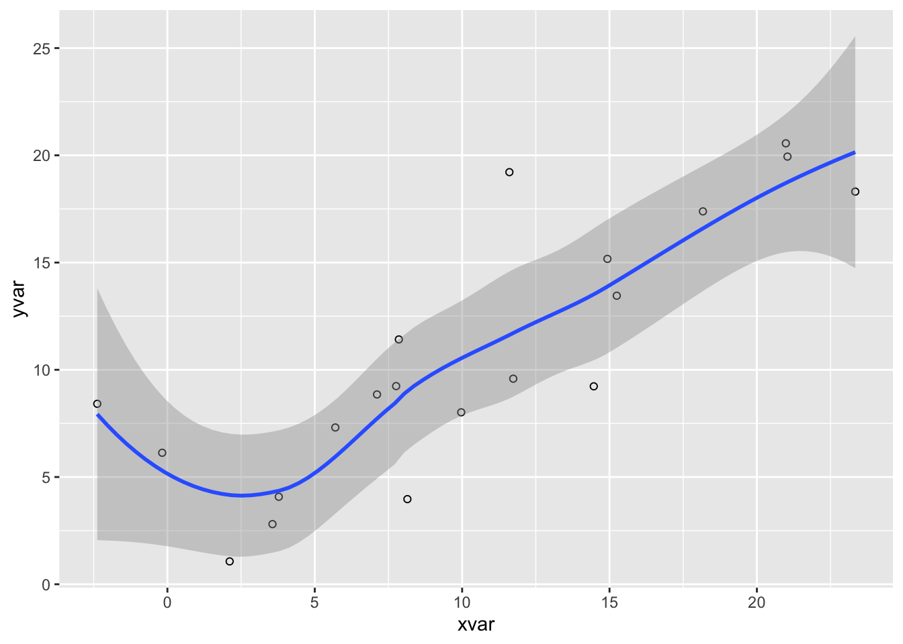

Quarto es una versión multilingüe y de última generación de R Markdown de Posit que incluye docenas de nuevas características y capacidades y al mismo tiempo puede renderizar la mayoría de los archivos Rmd existentes sin modificaciones.
Utiliza el botón Render en el IDE de RStudio para renderizar el archivo y obtener una vista previa de la salida con un solo clic o un atajo de teclado (⇧⌘K).
Si prefiere renderizar automáticamente al guardar, puede activar la opción “Renderizar al guardar” en la barra de herramientas del editor. La vista previa se actualizará al volver a renderizar el documento. La vista previa en paralelo funciona tanto con HTML como con PDF.
Al renderizar un documento de Quarto, knitr ejecuta primero todos los fragmentos de código y crea un nuevo documento Markdown (.md), que incluye el código y su salida. El archivo Markdown generado es procesado por pandoc , que crea el formato final. El botón Renderizar encapsula estas acciones y las ejecuta en el orden correcto.
36.2 ¿Cómo se compone?
El archivo contiene tres tipos de contenido: un encabezado YAML, fragmentos de código y texto Markdown.
36.2.1encabezado YAML
Un encabezado YAML (opcional) delimitado por tres guiones ( ---) en cada extremo.
---
title: "Hello, Quarto"
format: html
editor: visual
---
Al renderizar, el símbolo title, "Hello, Quarto", aparecerá en la parte superior del documento renderizado con un tamaño de fuente mayor que el resto del documento. Los otros dos campos YAML indican que la salida debe estar en formato htmlformaty que el documento debe abrirse en formato visualeditorpredeterminado.
Puedes consultar todos los campos YAML disponibles para documentos: HTML aquí . Los campos YAML disponibles varían según el formato del documento; por ejemplo, consulte aquí los campos YAML para documentos PDF y aquí para MS Word.
Importante
Para crear archivos PDF, se necesitará instalar una distribución reciente de LaTeX. Recomendamos usar TinyTeX (basado en TexLive), que se puede instalar con el siguiente comando:
quarto install tinytex
36.3 Renderizar a varios tipos de archivos
Si desea renderizar en todos los formatos, puede hacerlo con el paquete quarto , que proporciona una interfaz de R para la CLI de Quarto. Por ejemplo, para renderizar el documento actual, utilice quarto::quarto_render(). También puede especificar el nombre del documento que desea renderizar, así como los formatos de salida.
Como resultado, verá aparecer tres nuevos archivos en el panel Archivos:
authoring.docx
authoring.html
authoring.pdf
36.4 Callout / notas
Da clic en Insert/callout.
Puede seleccionar uno de los cinco tipos de callout (nota, sugerencia, importante, precaución o advertencia), personalizar su apariencia (predeterminada, simple o mínima) y decidir si desea mostrar el ícono.
Luego, intente insertar el texto dentro del cuadro de callout.
Nota
Nota
Tip
Sugerencia
Importante
Importante
Precaución
Precaución
Advertencia
Advertencia
36.5 Cross reference / Referencias cruzadas
Las cross references en Quarto son una forma de enlazar automáticamente figuras, tablas, secciones, ecuaciones y otros elementos dentro de tu documento, de manera que se numeran y se convierten en hipervínculos navegables. Esto evita tener que actualizar manualmente la numeración si agregas o quitas elementos.
Etiqueta (label) Cada elemento que quieras referenciar necesita una etiqueta única.
Para figuras: {#fig-nombre}
Para tablas: {#tbl-nombre}
Para secciones: {#sec-nombre}
Para ecuaciones: {#eq-nombre}
Referencia en el texto Para referenciar, se usa @ seguido del identificador:
@fig-nombre → referencia a una figura.
@tbl-nombre → referencia a una tabla.
@sec-nombre → referencia a una sección.
@eq-nombre → referencia a una ecuación.
Quarto asigna números consecutivos a las entidades (Figura 1, Tabla 2, etc.) y actualiza todo si cambias el orden o agregas nuevos elementos.
Ejemplo:
Entidad
Referencia
Etiqueta / Título
Sección
@sec-eda
ID añadido al encabezado:
# Análisis exploratorio de datos {#sec-eda}
Figura
@fig-pressure
Opciones YAML en la celda de código:
#| label: fig-scatterplot
#| fig-cap: "Pressure"
Tabla
@tbl-stats
Opciones YAML en la celda de código:
#| label: tbl-stats
#| tbl-cap: "Summary statistics for price and area of houses in Duke Forest"
Ecuación
@eq-slr
Al final de la ecuación de visualización:
$$ {#eq-slr}
37 Análisis exploratorio de datos
Aquí se describe el análisis exploratorio de los datos.
`geom_smooth()` using method = 'loess' and formula = 'y ~ x'

Figura 37.1: Pressure
37.1 Estadísticas descriptivas
Código
knitr::kable(head(ggplot2::diamonds))
Tabla 37.1: Summary statistics for price and area of houses in Duke Forest
carat
cut
color
clarity
depth
table
price
x
y
z
0.23
Ideal
E
SI2
61.5
55
326
3.95
3.98
2.43
0.21
Premium
E
SI1
59.8
61
326
3.89
3.84
2.31
0.23
Good
E
VS1
56.9
65
327
4.05
4.07
2.31
0.29
Premium
I
VS2
62.4
58
334
4.20
4.23
2.63
0.31
Good
J
SI2
63.3
58
335
4.34
4.35
2.75
0.24
Very Good
J
VVS2
62.8
57
336
3.94
3.96
2.48
37.1.1 Modelo de regresión
El modelo lineal simple se expresa como:
\[
Y = \beta_0 + \beta_1 X + \epsilon
\tag{37.1}\]
Ejemplo en el texto:
Presentamos los resultados del análisis exploratorio de datos en Capítulo 37 y la estadística descriptiva en Sección 37.1 .
La Figura 37.1 muestra la relación entre estas dos variables en un diagrama de dispersión.
La Tabla 37.1 presenta estadísticas descriptivas básicas de estas dos variables.
Podemos ajustar un modelo de regresión lineal simple de la forma mostrada en Ecuación 37.1.
37.2Aprendiendo más
¡Ya has aprendido los conceptos básicos de Quarto! Una vez que te sientas cómodo creando y personalizando documentos, aquí tienes algunas cosas más que puedes explorar:
Presentaciones : cree presentaciones de PowerPoint, Beamer y Revealjs utilizando la misma sintaxis que aprendió para crear documentos.
Sitios web : publique colecciones de documentos como un sitio web. Los sitios web admiten múltiples formas de navegación y búsqueda de texto completo.
Blogs : crea un blog con una página acerca de, listas de publicaciones flexibles, categorías, feeds RSS y más de veinte temas.
Libros : cree libros y manuscritos en formatos impresos (PDF, MS Word) y en línea (HTML, ePub).
Interactividad : incluya componentes interactivos para ayudar a los lectores a explorar los conceptos y los datos que está presentando más profundamente.